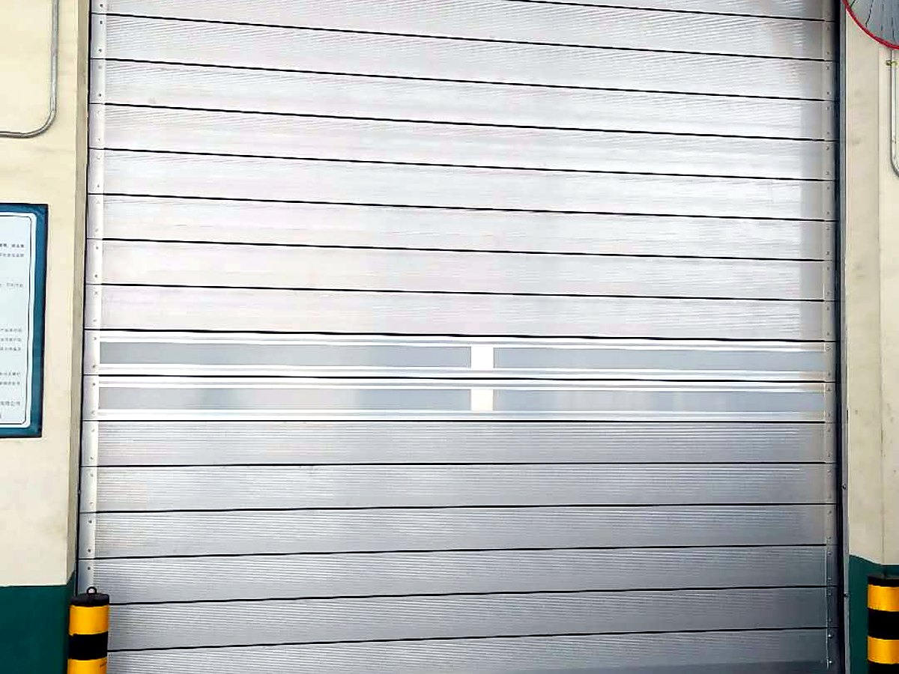
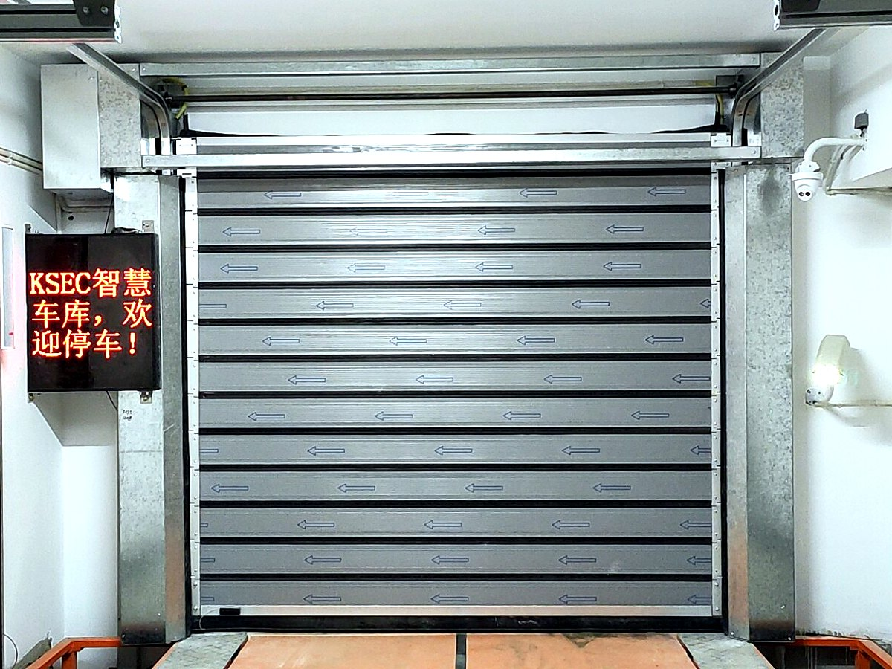

硬质快速门和软帘快速门，差在哪
两者常被放在一张报价单上比较，但适用的位置其实不一样。先看这张表，再决定要不要多花这笔钱。
| 维度 | 软帘快速门 | 硬质快速门 |
|---|---|---|
| 门体 | PVC 涂层软帘 | 铝合金或钢质夹芯门板 |
| 抗风 | 靠抗风杆约束，能力有限 | 门板刚度 + 螺旋导轨，明显更强 |
| 保温 | 一般 | 夹芯板结构，保温更好 |
| 密封 | 毛刷 + 软帘贴合 | 门板搭接 + 密封条，缝隙更少 |
| 速度 | 常见 1.2–1.5 m/s | 1.0–2.5 m/s，按配置 |
| 造价 | 低 | 高（门板与导轨成本占比大） |
| 典型位置 | 车间内部通道、洁净区隔断 | 外立面、大洞口、高频重载、强风区 |
一句话：门朝外、洞口大、风压高、要保温，就上硬质；门朝内、只做隔断，软帘够用。
螺旋式与滚筒式，怎么选
螺旋式
门板沿螺旋导轨收进门楣上方的“螺旋塔”，不占用洞口两侧空间，运行轨迹平滑，启闭速度快、噪音低，适合高频与重载工况。代价是门楣上方需要更高的安装空间。
滚筒式
门板卷绕在卷轴上，结构简单、门楣占用小、造价低，适合洞口不高、频率中等的场合。卷径会随门高变大，门洞越高越吃亏。
选型判断：门楣空间够、每天启闭上百次 → 螺旋式；门楣紧张、预算优先、频率中等 → 滚筒式。这一条比品牌比较更能决定后期好不好用。
门体结构与关键部件
- 门板：铝合金挤压型材或钢质夹芯板，中间可填聚氨酯保温材料。板间用铰链连接，靠密封条搭接。
- 螺旋导轨：决定运行轨迹与抗风能力，安装精度要求高，土建偏差会直接变成异响和偏磨。
- 平衡与驱动：配重或扭簧平衡门体重量，伺服电机驱动；平衡没调好，电机再大也费劲。
- 安全装置：光电对射、安全底边、防坠落（钢丝绳或链条断裂保护）、急停。
- 视窗：可加透明或采光窗，用于观察与采光；位置和尺寸按使用习惯定，不是越多越好。
典型应用场景
| 行业 | 位置 | 为什么用硬质 |
|---|---|---|
| 汽车制造 | 焊装、涂装、总装车间通道 | 节拍快、通行频繁，门体要抗撞抗风 |
| 环保能源 | 垃圾处理厂卸料大厅 | 负压与异味控制要求密封，洞口大、风压高 |
| 食品医药 | 洁净区外门、原料缓冲 | 夹芯板易清洁，密封好，利于维持压差 |
| 冷链物流 | 冷库月台、穿堂 | 保温与密封直接决定能耗 |
| 工业厂房 | 外立面主通道 | 抗风、防盗、外观整齐 |
参数参考
| 项目 | 常规配置区间 | 说明 |
|---|---|---|
| 门板 | 铝合金型材 / 钢质夹芯板 | 厚度、填充材料按保温要求配置 |
| 适用洞口宽 | 2–6 m | 更宽建议评估堆积门或分节提升门 |
| 适用洞口高 | 2–6 m | 螺旋式需更高的门楣空间 |
| 开启速度 | 1.0–2.5 m/s | 按门体重量与电机配置 |
| 抗风性能 | 按项目核算 | 检测方法 GB/T 7106-2019，等级判定 GB/T 31433 |
| 安全装置 | 光电、安全底边、防坠落 | 人员通行位置建议全配 |
安装要与土建配合的三件事
- 门楣高度：螺旋式要留出螺旋塔空间，这一项在土建阶段定，后期改代价最大。
- 侧柱与预埋：导轨受力集中在立柱上，砌体墙需加钢构背衬，不能直接打在空心砖上。
- 地坪与排水：门槛平整度影响密封；卸料大厅、垃圾站这类冲洗频繁的位置，地坪坡度和排水要先做好。
维护重点
硬质门的维护重点和软帘门不同：软帘怕撕裂，硬质门怕导轨偏磨与平衡失调。每月听一次运行声音、每季度检查铰链与密封条、每半年复核平衡与限位，基本可以把大故障挡在发生之前。门板被叉车撞凹的，单片可换，不必整樘更换。
项目实拍



常见问题
硬质快速门为什么比软帘贵这么多？
贵在门体和导轨：铝合金型材或夹芯门板、螺旋导轨、平衡系统，材料和加工成本都高于软帘与卷轴。它换来的是抗风、保温、密封和使用寿命，适合门朝外、洞口大、频率高的位置；只做车间内部隔断就没必要上。
螺旋式和滚筒式哪个更耐用？
同等使用频率下，螺旋式的运行轨迹更平滑、门板不卷绕，疲劳损伤更小，通常更耐用，但要求门楣空间和安装精度。滚筒式结构简单、维护便宜，适合频率中等的场合。没有绝对的好坏，只有匹配不匹配。
加了透明视窗会不会影响强度？
视窗是嵌在门板框架里的，按规范配置不会削弱整体刚度，但开窗面积和位置要合理。观察需求集中在某一高度时，做窄条窗比做大面积更划算。
门板被撞了怎么办？
单片门板可以单独更换，不需要整樘报废；导轨变形的要看变形程度，轻微校正、严重更换。这类事故多半发生在叉车贴边通行的位置，加装防撞柱比事后维修更省钱。
关于参数：本页数据为常规配置区间，用于初选与预算参考，不构成对具体项目的性能承诺；
实际参数以现场勘测记录与合同技术附件为准。产品检测情况见检测报告。
参考标准
- GB/T 7106-2019《建筑外门窗气密、水密、抗风压性能检测方法》
- GB/T 31433《建筑幕墙、门窗通用技术条件》（性能等级判定）
- JG/T 302-2022《卷帘门窗》
本页更新于 2026-10-17。以上标准为产品选型与验收的通用依据，具体执行版本以项目所在地区现行有效版本为准。